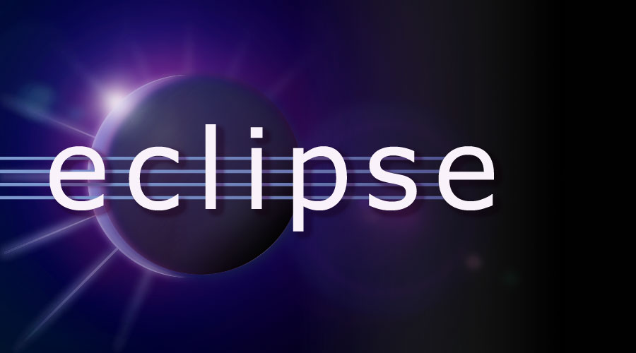

| Home | Operators | Decisions | Loops | Object-Orientation | References |
| Workspace Setup | Project Setup | Project 1 | Project 2 | Project 3 |
Welcome to Learning Through Gaming, a workshop held at the Tumo Center for Creative Technologies. This course is designed as an introduction to educational technology for teenagers, but the reference material is freely available to all those who are interested. In this class we will be learning about and creating our own educational games. The focus of these games may be your favirite subject we learn in school, which could then be used as a fun supplimentary resources by future students. They may however, have a unique focus that evokes critical thinking skills through realistic puzzles-like scenarios. The main idea is to encourage intellectual engagement through play, both of which are very important for personal growth.
There are many different tools that would be appropriate to create intriguing games depending on the requirements. Educational games were made well before modern technology came to be and continues to evolve. This course will focus on learning a few versatile and powerful tools that may be valueable skills for future endeavors. Here is a brief description of the main tools we will use:
